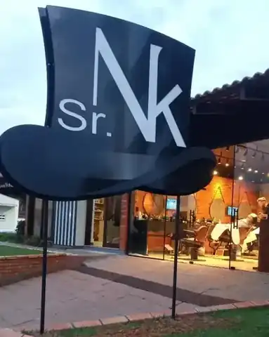

Barbeiro
Agendar
SR NK • RIO DO SUL
Corte bom.
Corte bom.
Hora marcada.
Escolha seu barbeiro, marque pelo AppBarber e venha tranquilo. Sem fila e sem perder tempo.



AVALIAÇÕES
Ver no Google
Já conhece a Sr NK?
Veja as avaliações no Google ou conte como foi seu atendimento.
ONDE ESTAMOS
Centro de Rio do Sul.
Rua Dom Bosco, 430Centro • Rio do Sul/SC • 89160-135
Atendimento somente com hora marcada.

A SR NK
Quatro barbeiros.
Quatro barbeiros.
Uma casa.
A Sr NK é feita por gente de verdade, cada um com seu jeito de trabalhar e atender. Você escolhe com quem quer cortar, marca o horário e chega sem fila.
O combinado é simples: respeito pelo seu tempo, atenção no detalhe e um corte que faça sentido para você.
Conhecer mais no Instagram